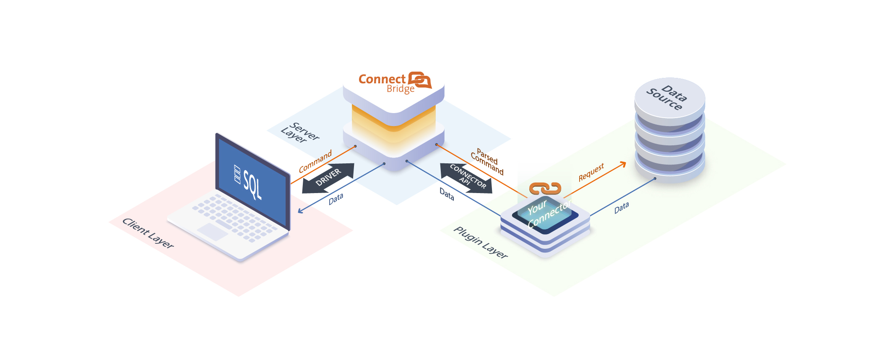

Overview
What is Connect Bridge Platform?
Connect Bridge (CB) is a powerful, yet easy to use integration platform that enables casual users to manage data stored in hundreds of data sources via the Structured Query Language (SQL).
Supported data sources include a wide range of databases, servers, Microsoft Azure services and many other third-party online services. Connect Bridge Platform also provides a Connector SDK so that third parties can create their own custom connectors.
Connect Bridge Platform is divided into three major layers: Client, Server and Plugin.

What is Connect Bridge Connector SDK?
We offer a wide variety of connectors, but sometimes you might want to call APIs, services, and systems that aren't available as prebuilt connectors. To support more tailored scenarios, you can build custom connectors.
Connect Bridge Connector SDK helps you to create your own custom connectors and seamlessly plug them into Connect Bridge Platform.
What are connectors? Simply put, a connector is a proxy or a wrapper around an API that enables users to seamlessly access data using Transact-SQL language. Examples of popular connectors include Office 365, Salesforce, Dropbox, Google services, and more.
The following are some technical features:
- Eager and lazy loading
- Rich mapping capabilities, including support for:
- Unique constraints
- One-to-one, one-to-many and many-to-many relationships
- Primitive types
- Parametric types
- Table type
- Build-in system functions
- Build-in system procedures
- In-memory caching for improving the performance by reducing the effort required to generate content
- Compatibility with Transact-SQL
- Insert multiple rows using single insert statement
- Enhance data source's capabilities
- Execute unsupported predicates, joins, aggregation, and more
Get Started
Add the CB.Connector.dll to your project or install the CB Connector SDK Tools for Visual Studio. Then watch videos, read tutorials, and advanced documentation to help you make the most of CB Connector SDK.
Community
Issue tracker
To report bugs and require features, please use our GitHub Issue Tracker.
Stack Overflow
For more questions about CB Connector SDK, please tag questions with connect-bridge.